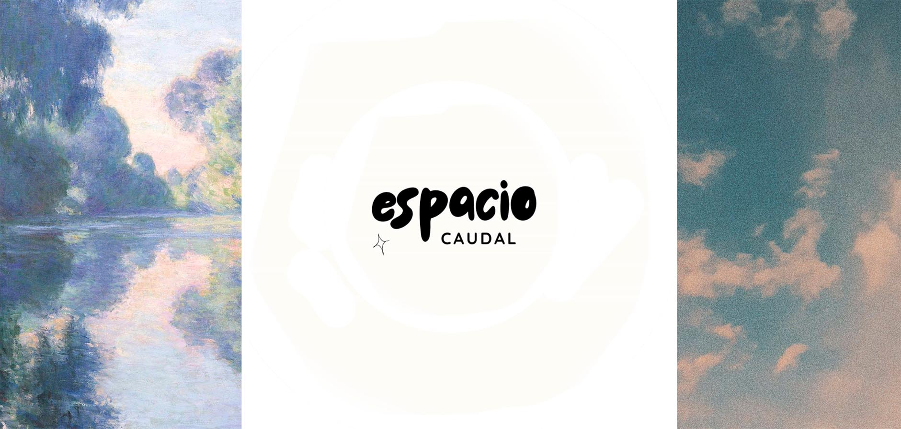

Bienvenido a Espacio Caudal



Un lugar pensado para compartir creatividad, reflexiones y aprendizajes. Aquí encontrarás mini lecturas, textos breves y personales que funcionan como una ventana a distintas ideas y sensaciones.
Este sitio es también un portfolio en construcción, un espacio vivo donde poco a poco se sumarán nuevas secciones: críticas, proyectos y más creaciones que reflejan un recorrido en constante evolución.
Hay una frase muy comun como "ley" en la astrologia que es: como es arriba es abajo como es adentro es afuera